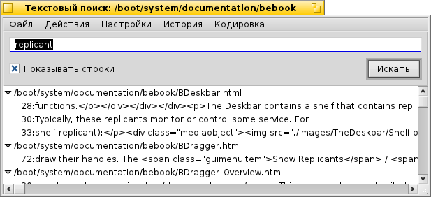

Русский
Русский Français
Français Deutsch
Deutsch Italiano
Italiano Español
Español Svenska
Svenska 日本語
日本語 Українська
Українська 中文 ［中文］
中文 ［中文］ Português
Português English
EnglishПеревод этой страницы еще не завершен. Пока это не произойдет, незавершенные части будут на английском.
 TextSearch
TextSearch
| Расположение в Deskbar: | Отсутствует в меню Deskbar, обычно запускается при помощи дополнения для Tracker | |
| Расположение в Tracker: | /boot/system/apps/TextSearch | |
| Настройки хранятся по адресу: | ~/config/settings/TextSearch |
TextSearch looks for a string in text files. Typically it is invoked from Tracker's Add-on context menu on the selection of files or folders you want to search.
You enter a search string in the text box on top and hit RETURN or click to start. If is checked, the hits are automatically expanded to show the lines of the file containing the search string.
Only a few words on some of the otherwise self-explaining menu items:
Меню Файл | ||||
| ALT N | Opens a new window where you can enter another string and search through the same files/folders. | |||
| ALT F | Lets you choose a new set of files and folders to search through. | |||
Action menu | ||||
| ALT T | Removes all entries from the list that are not currently selected. | |||
| ALT O | Opens the currently selected files with their preferred application (same as a double-click). If it's a text editor supporting it (like Pe), you can jump to the exact line the search string was found. | |||
| ALT K | Opens the location of the currently selected files in Tracker. | |||
| ALT B | Copies the current selection to the clipboard. | |||
Settings menu | ||||
| This is useful when working in a "unixy" environment, where often administrative files are hidden inside ".folders/". Source versioning systems like SVN and CVS are examples of applications using this and are also widely used in Haiku. | ||||
| TextSearch uses the command line tool grep. For it, special characters like '"*\$?! and spaces have to be escaped with a \. Deactivating this setting means you have to do this yourself, but in exchange grants you the power of regular expressions. | ||||
| TextSearch is currently only useful for finding strings in plain text files. Deactivating this setting will have it look through any kind of file anyway. | ||||
History menu | ||||
| Contains recently used search strings. | ||||
Encoding menu | ||||
| Lets you choose different character encodings if needed. | ||||